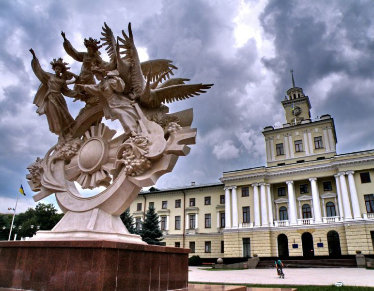

Історія заснування
Територія, на якій розташований Хмельницький, була заселена ще в давні часи. Дослідження виявили в околицях міста чимало археологічних пам'яток. Зокрема, на схід від мікрорайону Лезневе — поселення з матеріалами доби бронзи II тис. до н. е. та скіфського часу VII—III ст. до. н. е., у мікрорайоні Озерна — багатошарове поселення з матеріалами ранньої залізної доби І тис. до н. е., у мікрорайоні Дубове — поселення скіфського часу VII—III ст. до. н. е., у мікрорайонах Гречани та Озерна — поселення черняхівської культури VII—III ст. тощо. До наших днів збереглися кургани, які датуються археологами VII—III ст. до. н. е. (скіфський час) — один у мікрорайоні Виставка та два на південний схід від мікрорайону Ракове. Сучасне зображення Владислава II Ягайла Місто Хмельницький походить від невеликого поселення Плоскирів або Плоскирівці, час заснування якого невідомий. Перша достовірна згадка про Плоскирів (Плоскировець) міститься у привілеї, виданому великим князем Литовським і Руським та Королем Русі Владиславом ІІ Ягайлом в 1431 р. під час війни із іншим претендентом на великокнязівський престол — Свидригайлом Ольгердовичем. Відповідно до запису від 10 лютого 1431 року, зробленому у Сопоті, Владислав записав Янові Чанстуловському за 100 гривень право на володіння селами Голисин (нині село Олешин Хмельницького району) та Плоскирівці на річці Південний Буг у Летичівському повіті Подільської землі («… super villis Holissin et Ploskir о wcze super fluvio Boh iacentu in terra Podoliensi et districtum Latichoviensi sitas»). Цю найдавнішу на сьогодні писемну згадку про Хмельницький введено в науковий обіг завдяки дослідженням істориків. Ще у 1990-х роках Микола Петров — професор Кам'янець-Подільського університету, посилаючись на історика XIX ст. Михайла Орловського, висловив думку про існування Плоскирова у 1430-х роках XV ст. У 2000-х роках Сергію Єсюніну, співробітнику Хмельницького обласного краєзнавчого музею, вдалося відшукати в одному із томів «Архива Юго-Западной России» відомості про існування Плоскирова у 1434—1464 роках із перепосиланням на документи Литовської метрики. Сергій Миколайович звернувся до київського історика Віталія Михайловського із проханням зробити копії документів XV століття, в яких згадується Плоскирів. Єсюнін опублікував їх у книзі «Місто Хмельницький: історія, події, факти», а Віталій Михайловський — в «Українському археографічному щорічнику» (випуск 8/9). Саме з того часу поширилась інформація про нову дату найдавнішої згадки про місто — 1431 рік. 2006 року було проведено наукову конференцію «Місто Хмельницький у контексті історії України», після якої міська влада затвердила дату 1431 рік як першу згадку про Хмельницький, а місто замість свого 513-річчя відсвяткувало 575 річницю від першої писемної згадки. До цього згадка датувалась 1493 роком.
Населення
Національний склад міста Хмельницький за даними Всеукраїнського перепису населення 2001 року: 88,3 % — українці, 7,9 % — росіяни, 2,0 % — поляки, 0,4 % — білоруси, 0,3 % — євреї.
Мова
Згідно з опитуваннями, проведеними Соціологічною групою «Рейтинг» у 2017 році, українською вдома розмовляли 82 % населення міста, російською — 6 %, українською та російською в рівній мірі — 12 %
Культура
Хмельницький — значний культурний осередок Поділля і держави в цілому. Тут працюють 4 театри та обласна філармонія, кінотеатри, декілька музеїв, інші заклади культури. Саме тут подоляни та гості міста зможуть дізнатися багато цікавих фактів про Хмельницький, розширити свій кругозір та познайомитися із культурною спадщиною краю. У місті також є мистецьке об'єднання «Спалах» — Об'єднання творчих людей міста Хмельницького, поведінці яких невластива стереотипність та пасивність — вони потребують динамічного, різнопланового культурного життя і можливості впливати на нього. Засновниками об'єднання є: Михайло Тристан (бізнесмен), Ігор Лисий (бас-гітарист групи «Мотор'ролла» та давній друг руху «Не будь байдужим!») та Олександр Куркчі (художник). Щорічно для фотографів аматорів та професіоналів проводиться фотоконкурс «Хмельницький крізь об'єктив», приурочений до святкування Дня міста.
Фестивалі
- Art Major Show — фестиваль оркестрових шоу-програм, який вперше відбувся в Хмельницькому 9—11 травня 2019 року. Проєкт відбувався за підтримки Українського культурного фонду. Учасниками фестивалю став народний колектив мажореток «Альфа» з міста Хмельницького, колектив мажореток «Іріс» з Угорщини, національний президентський оркестр, оркестр військово-музичного центру Сухопутних військ Збройних Сил України з міста Чернігова, оркестр барабанщиць «Студія 117» з міста Одеси, естрадний оркестр Головного управління Національної поліції в Хмельницькій області, хмельницький муніципальний естрадно-духовий оркестр, народний художній колектив естрадно-духова студія «Сувенір» з міста Київ. Фестиваль завершився шоу «Місто не спить». Участь у фестивалі взяло близько 200 учасників. Вони виконували музику, брали участь у батлах. Вдень перегляд шоу не обмежувався пропусками чи перепустками-браслетами. Чотири оркестри змагались у виконанні мелодій різних жанрів. Звучала музика з комедії «Діамантова рука», «Щедрик». 9 травня відбувались виступи мажореток, 10 травня — оркестровий концерт фестивалю, фестивальні дефіле духових оркестрів, відкриття фестивалю. Вечірнє шоу — театр оркестрів «Місто не спить». 11 травня відбувся батл оркестрів, оркестровий концерт фестивалю, концерт Президентського оркестру в обласній філармонії і закриття фестивалю
- JazzFestPodillya — фестиваль, в 2018 році уп'яте проводився у місті Хмельницький|Хмельницькому 11 та 12 травня. В ньому брали участь музиканти з Хмельницького та інших місті України. В перший фестивальний день виступав «Танок на майдані Конго». Фестиваль проводився на сцені поблизу кінотеатру ім. Т. Г. Шевченка, та біля торгового центру «Дитячий світ»
Театри, музика і кіно
Театри і музичні заклади міста:
- Обласний український музично-драматичний театр ім. Михайла Старицького;
- Хмельницький академічний обласний театр ляльок;
- обласна філармонія;
- Моно-театр «Кут»
У Хмельницькому працюють 5 кінотеатрів:
- «Мультиплекс». Чотиризальний кінотеатр, який має зал для перегляду 3D-фільмів «Альмодовар».
- Кінотеатр «Планета», який має два зали: Синій та Прем'єрний 3D.
- Кінотеатр імені Тараса Шевченка;
- Автомобільний кінотеатр «АВТО КІНО» за адресою: вул. Березнева, 3 (недалеко від Тернопільської вулиці)
- «SmartCinema» — у ТЦ «WoodMall».
Перший кінотеатр Хмельницького також мав назву «Оазис» та знаходився на місці філармонії
Музеї
- обласний краєзнавчий музей;
- обласний художній музей;
- Літературний музей
- Музей історії міста Хмельницького;
- Кімната-музей Григорія Сковороди
- Хмельницький музей-студія фотомистецтва;
- Музей споріднених міст Хмельницького;
- Музей-панорама «Звільнення Проскурова»;
- Історико-музейний комплекс «Світло душі»;
- Музей Голокосту та єврейської громади Хмельницького
- Арт Галерея MASLO.
Відомі люди
- Борима Трохим Васильович — професор, доктор медичних наук, акушер-гінеколог.
- Валевська Наталя Олександрівна — українська співачка.
- Джек Лейбовиць — американський бухгалтер і видавець, відомий насамперед як співвласник із Гаррі Доненфельдом National Allied Publications (пізніше DC Comics).
- Жулкевський Іван Станіславович — актор, народний артист України.
- Пономарьов Олександр Валерійович — народний артист України.
- Педан Олександр Сергійович — шоумен та гуморист.
Та багато інших молодців з Міста Хмельни́цький
Міста-побратими
У Хмельницького є 13 міст-побратимів та 1 штат-побратим:
- США Модесто, США (з 1987 року)
- Сілістра, Болгарія (з 1992 року)
- Бор, Сербія (з 1995 року)
- Бєльці, Молдова (з 1996 року)
- Цеханув, Польща (з 1996 року)
- Крамфорс, Швеція (з 1997 року)
- Шицзячжуан, Китай (з 1998 року)
- Шяуляй, Литва (з 2001 року)
- Агуаскальєнтес, Мексика (з 2002 року)
- Манізес, Іспанія (з 2002 року)
- Карміель, Ізраїль (з 2007 року)
- Старобільськ, Україна (з 2015 року)
- Руставі, Грузія (з 2016 року)
- Наманган, Узбекистан (з 2021 року)
- Айдин Ефелер, Туреччина (з 2021 року)
- Прага 6, Чехія (з 2022 року)
- Штат Міссісіпі, США (з 2022 року)
- Шеффілд, Велика Британія (з 2022 року)